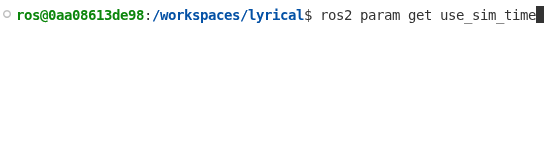
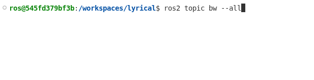

备注
You're reading the documentation for a development version. For the latest released version, please have a look at Lyrical.
Lyrical Luth (codename 'lyrical'; May, 2026)
Lyrical Luth is the twelfth release of ROS 2. It is a Long Term Support (LTS) release, and it is supported until May 2031.
New Features in Lyrical
This section highlights some of the new features in ROS Lyrical. For all changes, see the full ROS Lyrical changelog.
Callback Group Events executor (rclcpp)
Looking for better executor performance?
Check out the new Callback Group Events Executor.
Like its predecessor the EventsExecutor, the EventsCBGExecutor uses an events queue to process ready entities.
However, EventsCBGExecutor adds support for multiple sources of ROS time and multiple threads.
Compared to the Single and Multithreaded executors, the EventsCBGExecutor uses 10% to 15% less CPU.
Try it out by instantiating rclcpp::executors::EventsCBGExecutor:
#include <rclcpp/rclcpp.hpp>
// ... class MyNode ...
int main(int argc, char ** argv)
{
rclcpp::init(argc, argv);
auto node = std::make_shared<MyNode>();
rclcpp::executors::EventsCBGExecutor executor;
executor.add_node(node);
executor.spin();
rclcpp::shutdown();
return 0;
}
Using composable nodes?
Launch a component container with the EventsCBGExecutor using the new --executor-type argument.
ros2 run rclcpp_components component_container --executor-type events-cbg
<?xml version="1.0" encoding="UTF-8"?>
<launch>
<node_container pkg="rclcpp_components" exec="component_container" name="my_node_container" namespace="" args="--executor-type events-cbg">
<!-- Your composable nodes here -->
</node_container>
</launch>
For more info, see ros2/rclcpp#3097, ros2/rclcpp#3134, and ros2/rclcpp#3137.
Parameter range descriptors check bounds for integer and double arrays (rclcpp)
Do your nodes have integer or double arrays?
Do you need to constrain the values in those arrays?
rclcpp nodes now validate range constraints on these arrays.
Using the code below, the node will only allow setting my_integer_array to a list containing even integers between 2 and 10 (inclusive).
rcl_interfaces::msg::ParameterDescriptor descriptor;
descriptor.integer_range.resize(1);
auto & integer_range = descriptor.integer_range.at(0);
integer_range.from_value = 2;
integer_range.to_value = 10;
integer_range.step = 2;
node->declare_parameter("my_integer_array", std::vector<int64_t>{2, 4, 6, 8, 10}, descriptor);
See ros2/rclcpp#2828 for more info.
AsyncNode lets you use asyncio (rclpy)
Want to use asyncio and rclpy at the same time?
Check out the new AsyncNode class.
This node runs an asyncio event loop.
Call await on any asyncio operation from any subscription, service, and timer callback.
Try await client.call(request) to wait for service calls, and the sim-time aware await clock.sleep(...).
This class uses significantly less CPU compared to the default SingleThreadedExecutor.
import asyncio
import rclpy
from rclpy.experimental import AsyncNode
class HelloWorldNode(AsyncNode):
def __init__(self):
super().__init__('hello_world_node')
self._timer = self.create_timer(5.0, self._cb)
async def _cb(self):
self.get_logger().info('Hello')
await self.get_clock().sleep(1.0)
self.get_logger().info('World!')
async def _main():
with rclpy.init():
await HelloWorldNode().run()
if __name__ == '__main__':
asyncio.run(_main())
See Writing an async node with asyncio (Python) and ros2/rclpy#1620 for more details.
Publish messages without copying data using rosidl::Buffer
Are you publishing data on ROS topics, but using the data elsewhere, like a GPU?
Tired of copying data out of the GPU before publishing just to copy it back into the GPU in the subscriber?
Use rosidl::Buffer to publish and subscribe ROS messages without moving data from elsewhere.
All uint8[] fields now have the type rosidl::Buffer<uint8_t> in C++ instead of std::vector<uint8_t>.
Define your ROS messages with uint8[] fields and install an appropriate rosidl::BufferBackend implementation.
Note that only publishers and subscribers using rmw_fastrtps_cpp may use this feature for now, but support in Zenoh is coming.
Using a custom hardware accelerator or machine learning library?
You can benefit from this too.
See Writing a rosidl::Buffer backend to learn how to implement your own rosidl::BufferBackend.
See About rosidl::Buffer backends and Using rosidl::Buffer backends for more details.
Annotate types in YAML Parameter Files
Tired of rcl interpreting ambiguous YAML parameter values as the wrong type?
In ROS Lyrical, use YAML tags to specify the correct type.
my_node:
ros__parameters:
string_param: !!str true
bool_param: !!bool yes
int_param: !!int 0
float_param: !!float 10
seq_param: !!seq [10, 0, -10]
map_param: !!map {str: string, bool: true, int: 10, float: 1.1}
See ros2/rcl#1275 for more info.
Per-message log severity in launch files
ROS Lyrical now supports per-message log severity levels in launch files. This makes it easier to find important messages or ignore unimportant ones in log files when debugging!
Specify the log level using the new level argument on the log action.
Alternatively, use the new log_debug, log_info, log_warning, or log_error actions.
<?xml version="1.0" encoding="UTF-8"?>
<launch>
<log level="INFO" message="Hello world! (log level=INFO)" />
<log_debug message="Hello world debug!" />
<log_info message="Hello world!" />
<log_warning message="Hello world warning!" />
<log_error message="Hello world error!" />
</launch>
For more info see ros2/launch#866.
New substitutions in XML and YAML launch files
Use XML or YAML launch files?
Substitutions make your launch files evaluate variables at launch time.
Launch frontends (the things that make it possible to use XML and YAML launch files) may now use string-join and path-join substitutions.
<?xml version="1.0" encoding="UTF-8"?>
<launch>
<log_info message="Check out $(string-join . https://docs ros org)"/>
<log_info message="Don't forget to source /$(path-join opt ros lyrical $(string-join . setup bash))"/>
</launch>
See ros2/launch#857 and ros2/launch#943 for more info.
Choose ROS logging backend at runtime
Have you ever needed to use ROS with another framework that has its own logging system?
ROS supports replacing its logging backend, but it previously required rebuilding rcl from source.
Now you can change the logging implementation at runtime!
Set the RCL_LOGGING_IMPLEMENTATION environment variable to switch between logging backends.
Valid values are:
rcl_logging_spdlogrcl_logging_noopor your own custom logging implementation!
If not specified, ROS uses rcl_logging_spdlog by default.
See ros2/rcl#1178, ros2/rcl#1276, and ros2/rcl_logging#135 for more details.
Control bag recording remotely using ROS services
Want to remotely control bag recording?
Use rosbag2's new services to:
start recording
~/recordstop recording
~/stopstart topic discovery
~/start_discoverystop topic discovery
~/stop_discoveryquery discovery state
~/is_discovery_running
ros2 bag record --all -o /tmp/my_awesome_bag
# In another terminal, stop the existing recording
ros2 service call /rosbag2_recorder/stop rosbag2_interfaces/srv/Stop "{}"
# Start recording again at a new location
ros2 service call /rosbag2_recorder/record rosbag2_interfaces/srv/Record "{uri: 'file:///tmp/my_awesome_bag_2'}"
See ros2/rosbag2#2248 for more details.
Control bag Playback and Recording using Python
Want to control bag playback and recording programmatically? Previously, Python users relied on blocking command-line style helpers. Now Python users may call APIs to pause, resume, stop, seek, play next, control spinning, and wait for events.
Recording example:
import rclpy
import rosbag2_py
with rclpy.init():
# Configure storage and initialize the recorder
storage_opts = rosbag2_py.StorageOptions(uri='/tmp/my_awesome_bag', storage_id='mcap')
record_opts = rosbag2_py.RecordOptions()
record_opts.all_topics = True
recorder = rosbag2_py.Recorder(storage_opts, record_opts)
# Start the ROS node spinner and kick off the recording thread
recorder.start_spin()
recorder.record()
# Pause the recording and verify the current state
recorder.pause()
print(recorder.is_paused())
# Terminate recording and shut down the spinner threads
recorder.stop()
recorder.stop_spin()
Playback example:
import rclpy
import rosbag2_py
with rclpy.init():
# Configure storage and initialize the player
storage_opts = rosbag2_py.StorageOptions(uri='/tmp/my_awesome_bag', storage_id='mcap')
play_opts = rosbag2_py.PlayOptions()
play_opts.start_paused = True
player = rosbag2_py.Player(storage_opts, play_opts)
# Start the ROS node spinner and kick off the playback thread
player.start_spin()
player.play()
# Verify playback startup and retrieve bag timing metadata
print(player.wait_for_playback_to_start(1.0))
print(player.wait_for_playback_to_start_exclusively(1.0))
print(player.get_starting_time())
print(player.get_playback_duration())
# Control the playback state and step through messages manually
print(player.is_paused())
print(player.play_next())
player.resume()
player.pause()
player.seek(0)
# Await playback completion and terminate the worker threads
print(player.wait_for_playback_to_finish(1.0))
print(player.wait_for_playback_to_finish_exclusively(1.0))
player.stop()
player.stop_spin()
See ros2/rosbag2#2047, ros2/rosbag2#2062, ros2/rosbag2#2061, and ros2/rosbag2#2095 for more details.
Circular bag recording with limit on number of bags
Recording data on your robot with limited disk space?
Try the new --max-bag-files option.
It limits the maximum number of bag files stored on disk by automatically deleting the oldest split files as new ones are created.
# Max bag size: 100MB
ros2 bag record --all --max-bag-size 100000000 --max-bag-files 5
See ros2/rosbag2#2218 for more details.
More descriptive bag split names
Do you have trouble identifying which bag is which?
rosbag2 now names bag splits so that each is self-descriptive and chronologically traceable.
{counter}_{prefix}_{timestamp}.{extension}
counter: split index (integer starting from 0, not zero-padded)
prefix: derived from the bag directory name, with any default timestamp suffix removed
timestamp: local time at file creation, formatted as
YYYY_MM_DD-HH_MM_SSextension: bag file extension. e.g.,
.mcap,.db3
See ros2/rosbag2#2265 for more details.
Catch data loss early with rosbag2 message-loss observability
Say you've built a robust system for recording data on your robot, but there is a problem.
How do you know there's a problem?
With rosbag2's new message-loss observability of course!
rosbag2 now collects message-loss statistics from the transport layer and recorder internals.
It publishes incremental per-topic loss events on the events/rosbag2_messages_lost topic.
Control the publishing rate using --stats_max_publishing_rate.
# Publish message loss statistics at most 10 Hz
ros2 bag record --all --stats_max_publishing_rate 10 -o /tmp/my_awesome_bag
# If all is going well, you should see no output from this command
ros2 topic echo /events/rosbag2_messages_lost
See ros2/rosbag2#2039, ros2/rosbag2#2144, and ros2/rosbag2#2150 for more details.
fish shell support
Do you enjoy fish shell?
Do you want to use it with ROS?
Now you can!
Try out the new setup.fish script.
source /opt/ros/lyrical/setup.fish
See ros2/ros2cli#1211 and ament/ament_package#164 for more info.
To use fish shell with colcon, check out @Sunrisepeak's colcon-fish package.
ros2 param get a parameter from all nodes
Are you using simulated time?
How do you know if all of your nodes are using simulated time?
Use ros2 param get <param name> to get a parameter value from all nodes.

See ros2/ros2cli#1174 for more info.
ros2 param get and set multiple parameters on one node
Want to get and set multiple parameters on one node at the same time?
Use ros2 param get <node name> <param1> <param2> ... to get multiple values from a single node.
$ ros2 param get /robot_state_publisher frame_prefix ignore_timestamp publish_frequency
frame_prefix:
String value is:
ignore_timestamp:
Boolean value is: False
publish_frequency:
Double value is: 20.0
Use ros2 param set <node name> <param1> <value1> <param2> <value2> ... to set multiple values on a single node.
$ ros2 param set /robot_state_publisher frame_prefix foo ignore_timestamp True publish_frequency 10.0
frame_prefix: Set parameter successful
ignore_timestamp: Set parameter successful
publish_frequency: Set parameter successful
See ros2/ros2cli#1203 and ros2/ros2cli#1204 for more details.
ros2 doctor --report now reports Actions, Services, and Environment variables
ros2 doctor --report now includes information about Actions, Services, and ROS-related environment variables.
Include this report in your GitHub issues or AI prompts to debug problems faster.
$ ros2 doctor --report
ACTION LIST
action : none
action server count : 0
action client count : 0
ROS ENVIRONMENT
ROS environment variables : ROS_AUTOMATIC_DISCOVERY_RANGE=SUBNET, ROS_DISTRO=lyrical
rcutils environment variables :
rmw environment variables :
# ...
SERVICE LIST
service : /dummy_joint_states/describe_parameters
service count : 1
client count : 0
service : /dummy_joint_states/get_parameter_types
service count : 1
client count : 0
# ...
For more information see ros2/ros2cli#1059, ros2/ros2cli#1076, and ros2/ros2cli#1045.
Verbose service information ros2 service info --verbose
Are you debugging mismatched QoS settings between ROS clients and ROS services?
Try out the new --verbose option to ros2 service info.
Like ros2 topic info, this flag outputs detailed information about clients and services to help you troubleshoot issues.
$ ros2 service info --verbose /robot_state_publisher/list_parameters
Type: rcl_interfaces/srv/ListParameters
Clients count: 0
Services count: 1
Node name: robot_state_publisher
Node namespace: /
Service type: rcl_interfaces/srv/ListParameters
Service type hash: RIHS01_3e6062bfbb27bfb8730d4cef2558221f51a11646d78e7bb30a1e83afac3aad9d
Endpoint type: SERVER
Endpoint count: 2
GIDs:
- Request Reader : 01.0f.c8.b6.fe.43.b3.44.00.00.00.00.00.00.0e.04
- Response Writer : 01.0f.c8.b6.fe.43.b3.44.00.00.00.00.00.00.0f.03
QoS profiles:
- Request Reader :
Reliability: RELIABLE
History (Depth): KEEP_LAST (1000)
Durability: VOLATILE
Lifespan: Infinite
Deadline: Infinite
Liveliness: AUTOMATIC
Liveliness lease duration: Infinite
- Response Writer :
Reliability: RELIABLE
History (Depth): KEEP_LAST (1000)
Durability: VOLATILE
Lifespan: Infinite
Deadline: Infinite
Liveliness: AUTOMATIC
Liveliness lease duration: Infinite
Want to get client and service information programmatically? Use these new C++ and Python APIs.
node.get_servers_info_by_service('some/service/name')
node.get_clients_info_by_service('some/service/name')
node->get_servers_info_by_service("some/service/name");
node->get_clients_info_by_service("some/service/name");
See ros2/ros2cli#916, ros2/rclpy#1307, and ros2/rclcpp#2569 for more info.
ros2 topic bw multiple topics at once
Trying to figure out which topics are using most of your network bandwidth?
Now you can use ros2 topic bw with multiple topics at the same time.
Pass multiple topics by name:
ros2 topic bw /tf /joint_states
Or pass --all to watch bandwidth statistics in real time.

See ros2/ros2cli#1124 and ros2/ros2cli#1130 for more info.
URDF improvements
URDF released a few new features:
Quaternions
Capsule geometry
Acceleration, deceleration, and jerk limits
Add version="1.2" to your robot description to start using them.
<?xml version="1.0" ?>
<robot name="simple_capsule_arm" version="1.2">
<link name="link1">
<visual>
<origin xyz="0 0 0.25" quat_xyzw="0 0 0 1"/>
<geometry>
<capsule radius="0.1" length="0.5"/>
</geometry>
</visual>
<collision>
<origin xyz="0 0 0.25" quat_xyzw="0 0 0 1"/>
<geometry>
<capsule radius="0.1" length="0.5"/>
</geometry>
</collision>
</link>
<joint name="joint1" type="revolute">
<!-- ... -->
<!-- Using quaternion for a 90-degree pitch rotation (y-axis) -->
<origin xyz="0 0 0.5" quat_xyzw="0 0.7071068 0 0.7071068"/>
<!-- Demonstrating new and existing limits -->
<limit lower="-1.57" upper="1.57" effort="100.0" velocity="2.0" acceleration="10.0" deceleration="5.0" jerk="50.0"/>
</joint>
<!-- ... -->
</robot>
See ros/urdfdom#235, ros/urdfdom#238, and ros/urdfdom#212 for more info.
Note that the Robot Model plugin does not yet support capsule geometry. Please consider opening a pull request for this feature!
robot_state_publisher can read the robot description from a topic
Most of the time in a ROS system the robot_state_publisher node does two things:
It publishes the
robot_descriptionon a topic, andIt publishes TF transforms given joint positions.
If you have ever tried to add ROS interfaces to a framework with its own internal robot model, you may have wished these were two separate utilities.
Now they can be!
Set the use_robot_description_topic parameter to true to make robot_state_publisher subscribe to the robot_description topic instead of publishing it.
Then, make the other robot framework publish its own robot description on that topic.
See ros/robot_state_publisher#234 for more info.
Resource retriever service
Say you are debugging a robot in the field.
You open up RViz on your laptop, but you don't have the right version of the robot description installed.
In ROS Kilted, RViz added the ability to load meshes over the network using a ROS service /rviz/get_resource; however, that ability was limited to RViz.
ROS Lyrical comes with a generic resource_retriever_service so that any node can load meshes over the network.
resource_retriever::RetrieverVec plugins = resource_retriever::default_plugins();
// Create a RosServiceResourceRetriever plugin
plugins.push_back(std::make_shared<RosServiceResourceRetriever>(*node));
// Give that plugin to your Retriever instance
resource_retriever::Retriever retriever(plugins);
See ros2/rviz#1698 for more details.
Call ament_python_install_package multiple times
Packages may now call ament_python_install_package() multiple times with the same Python package name.
This allows you to use rosidl_generate_interfaces() and ament_python_install_package() to put generated messages and code into the same Python package.
While you can include code and message definitions in the same package, a best practice is to put message definitions in their own package. This lets others depend on just the messages, as they might not need the code or its dependencies.
See ament/ament_cmake#587 for more info.
New CMake target: ament_cmake_ros_core::ament_ros_defaults
Tired of specifying different C and C++ versions on different branches?
Let the new CMake target ament_cmake_ros_core::ament_ros_defaults set those for you.
This target uses target_compile_features to specify C and C++ version requirements.
find_package(ament_cmake_ros REQUIRED)
target_link_libraries(my_library PUBLIC ament_cmake_ros_core::ament_ros_defaults)
See ros2/ament_cmake_ros#62 for more info.
New thread naming utilities
Debugging multithreading issues?
Use two new utilities in rcpputils to get and set thread names.
This makes it easier to identify threads in debuggers like gdb.
#include <iostream>
#include <rcpputils/thread_name.hpp>
int main() {
rcpputils::set_thread_name("map_thread");
std::cout << rcpputils::get_thread_name() << "\n";
}
See ros2/rcpputils#213 for more details.
New rcutils APIs
The rcutils package includes some new utilities.
If your platform lacks strnlen, you may now use rcutils_strnlen instead.
#include <stdio.h>
#include <rcutils/strnlen.h>
int main() {
const char *str = "Hello world";
size_t len = rcutils_strnlen(str, 100);
printf("%zu\n", len);
return 0;
}
Need to encode or decode base64 data?
Try the new rcutils_encode_base64 and rcutils_decode_base64 functions.
#include <assert.h>
#include <stdio.h>
#include <string.h>
#include <rcutils/allocator.h>
#include <rcutils/base64.h>
#include <rcutils/types/uint8_array.h>
int main() {
rcutils_allocator_t allocator = rcutils_get_default_allocator();
rcutils_uint8_array_t input = rcutils_get_zero_initialized_uint8_array();
assert(rcutils_uint8_array_init(&input, 11, &allocator) == RCUTILS_RET_OK);
memcpy(input.buffer, "Hello World", 11);
input.buffer_length = 11;
char *encoded = NULL;
assert(rcutils_encode_base64(&input, &encoded, &allocator) == RCUTILS_RET_OK);
printf("%s\n", encoded);
rcutils_uint8_array_t decoded = rcutils_get_zero_initialized_uint8_array();
assert(rcutils_decode_base64(encoded, &decoded, &allocator) == RCUTILS_RET_OK);
printf("%.*s\n", (int)decoded.buffer_length, (char *)decoded.buffer);
allocator.deallocate(encoded, allocator.state);
assert(rcutils_uint8_array_fini(&input) == RCUTILS_RET_OK);
assert(rcutils_uint8_array_fini(&decoded) == RCUTILS_RET_OK);
return 0;
}
See ros2/rcutils#430 and ros2/rcutils#533 for more info.
New rcl APIs
If you maintain a ROS client library, you might be interested in these new rcl APIs:
rcl_lifecycle_get_transition_label_by_id
Retrieve the human-readable string label for a lifecycle transition ID. Use this label to log, debug, or display state transitions without manually mapping IDs to strings.
rcl_subscription_is_cft_supported
Check whether a subscription supports Content Filtered Topics (CFT) on the underlying middleware. Verify filtering support safely before applying or configuring message content filters.
rcl_action_count_clients
Query the ROS graph to count active action clients for a specific action name. Action servers can verify client presence before expending resources, or tools can inspect graph state.
rcl_action_count_servers
Query the ROS graph to count active action servers for a specific action name. Action clients can confirm a server is online before sending goal requests.
rcl_timer_exchange_callback_data
Update the user data pointer passed to a timer callback upon execution. Dynamically swap callback context or state without recreating the active timer instance.
rcl_action_server_set_expired_event_callback
Register a custom event callback that triggers when an action server goal expiration timer fires. Enable event-based execution patterns to asynchronously handle clean-up routines or notifications for expired goals.
For more information see these pull requests:
Pass constructor arguments to plugins using class_loader
You may now pass arguments to plugins using class_loader.
This removes the need for an initialization method in a plugin's API.
All you need to do is specialize class_loader::InterfaceTraits<> in your plugin's base class.
class MyPluginWithConstructor
{
public:
// constructor parameters for the base class do not need to match the derived classes
explicit MyPluginWithConstructor(std::string) {}
virtual ~MyPluginWithConstructor() = default;
virtual int some_api() = 0;
};
template<>
struct class_loader::InterfaceTraits<MyPluginWithConstructor>
{
// Define constructor arguments that you must pass to instantiate a plugin
using constructor_parameters = class_loader::ConstructorParameters<std::string,
std::unique_ptr<int>>;
};
For more information see ros/class_loader#223.
Runtime tracing opt-out mechanism
Removing the built-in tracing instrumentation from ROS 2 or excluding tracepoints from the instrumentation have so far been build-time options only. This is all enabled by default in the Linux binaries.
To avoid loading the tracer at runtime (and therefore disable all instrumentation), set the TRACETOOLS_RUNTIME_DISABLE environment variable to 1:
$ export TRACETOOLS_RUNTIME_DISABLE=1
$ ros2 run tracetools status
Tracing disabled
See ros2/ros2_tracing#185 for more info.
Long-term tracing improvements
Snapshot mode tracing
By default, tracing sessions write trace data continuously to disk. Tracing sessions using LTTng's snapshot mode store trace data in memory and only write to disk when a snapshot is taken. When memory buffers fill up, the oldest data is discarded, maintaining a rolling history whose size can be controlled by configuring sub-buffer size. This "flight recorder" mode is useful for capturing trace data only when something interesting occurs, avoiding continuous disk writes and thus lowering the runtime performance impact even more.
Snapshot mode tracing is available in ros2_tracing through the ros2 trace command and the the Trace launch file action.
See ros2/ros2_tracing#195 and ros2/ros2_tracing#206 for more info.
Dual session tracing
Dual session mode solves the problem of losing initialization trace data by using two separate tracing sessions: one for initialization events in snapshot mode, and another normal tracing session for runtime events. This allows starting to actively record trace data at any point without losing initialization data.
Use the Trace action with dual_session=True to start the initialization data session in snapshot mode.
Then use the trace commands with --dual-session option to take a snapshot of the initialization session and start the runtime session.
See ros2/ros2_tracing#191 and ros2/ros2_tracing#196 for more info.